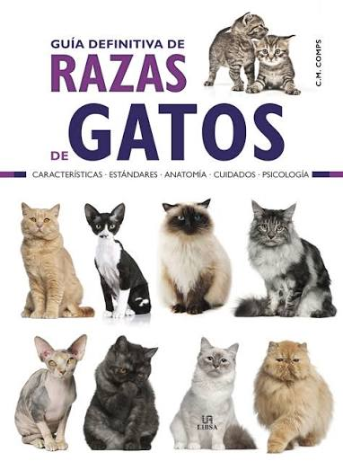
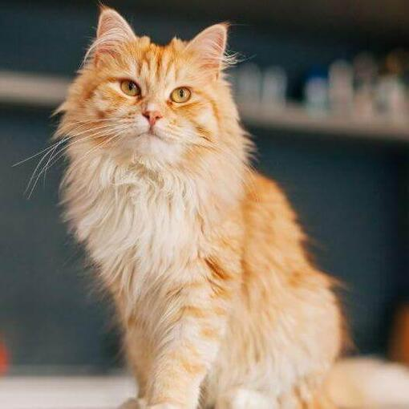
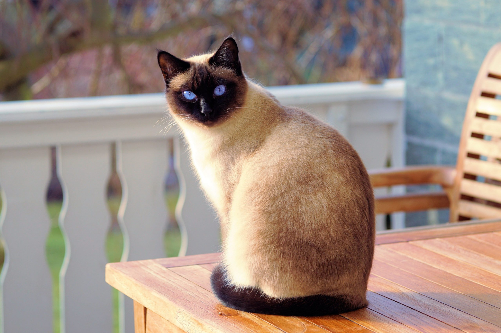
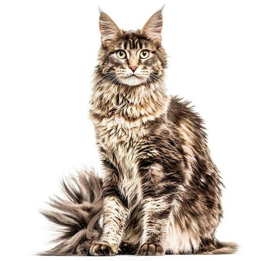
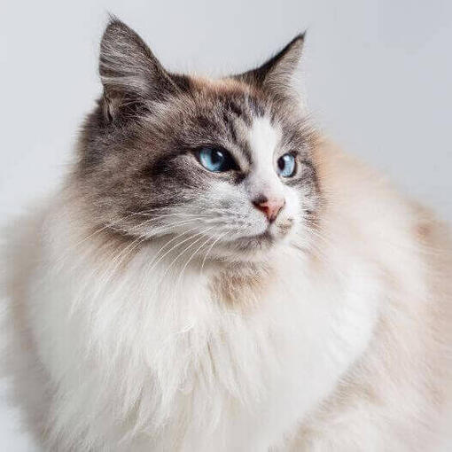
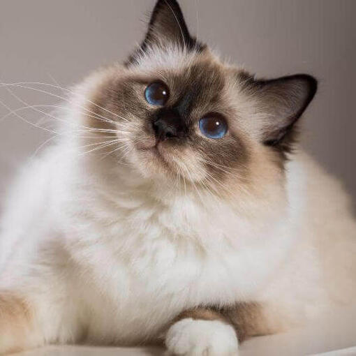

Los gatos son animales domesticos muy populares en todo el mundo. Exixten diversas rezas y tipos de gatos, cada uno con caracteristicas unicas.

A continuación, se presentan algunos de los tipos más conocidos:
Listado de las razas más destacadas y queridas:


Otras opciones de felinos:



"Los gatos poseen la gracia, la elegancia y la independencia que los seres humanos a menudo anhelan en secreto."
— Desconocido
A continuacion una ficha tecnita de los felinos:
Raza Origen Peso medio Esperanza de vida
---------------------------------------------------------
Persa Irán 3.5 - 5 kg 12 - 17 años
Siamés Tailandia 2.5 - 4 kg 15 - 20 años
Maine Coon EE.UU. 6.0 - 11 kg 12 - 15 años
© 2026 Maximiliano Abilahoud Hidalgo. Todos los derechos reservados €.